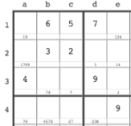
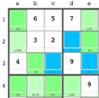

Sufusku
is composed of "sudoku" and "fusk", the swedish word for "cheating"
Sufusku
makes sudoku easier
Help!
Toggle this help on and off
Begin by entering the numbers you were given in your sudoku

Once you're finished, press the Set Baseline button
Now, every cell will show all valid numbers, and will be painted in some color:
green:
the greener the better, less numbers to choose from
blue:
only one number available
red:
an error has occurred!

Log